Caso de estudio · 01 · Fintech
Tu Financiera App
Una app financiera moderna, rediseñada alrededor de los clientes y pensada para ganarse su confianza.
Me sumé cuando arrancaba el rediseño y diseñé la mayor parte de la nueva experiencia de punta a punta, en 14 flujos nuevos que incluyen el onboarding y la solicitud de productos por autogestión. En el camino, propuse y construí el primer sistema de diseño de la empresa.
De un asesor por WhatsApp a una app que la gente maneja sola
La app rediseñada permite registrarse, ver todos los productos que tenés y pedir nuevos sin esperar a un asesor.
Usuarios activos, desde 25.000 antes del lanzamiento
NPS de lanzamiento, sobre 433 respuestas
Satisfacción en el primer mes
Registros nuevos en el primer mes
Son resultados del producto en su conjunto, a los que diseño aportó junto con el resto del equipo.
- 01Lideré el rediseño de punta a punta, incluidos 14 flujos nuevos
- 02Construí el primer sistema de diseño de Tu Financiera
- 03Hice las primeras entrevistas con clientes de la empresa después del lanzamiento (12 sesiones), que cambiaron la experiencia de las transferencias programadas

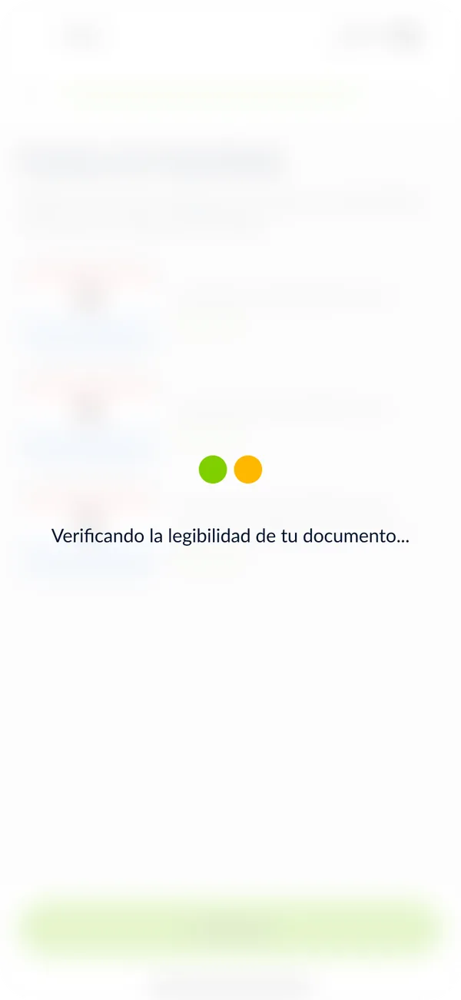


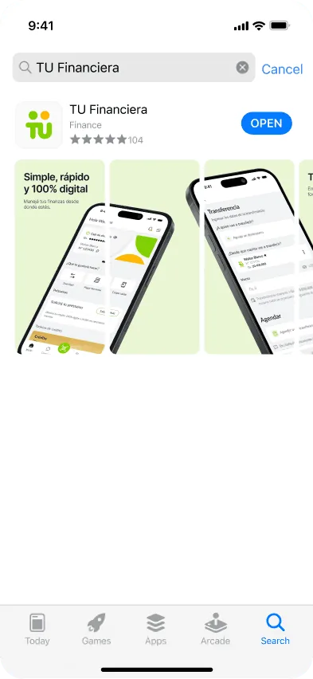
Una fintech paraguaya que todavía funcionaba como una sucursal
Tu Financiera ofrece préstamos, ahorro y tarjetas de débito y crédito a personas en Paraguay. Su app existía, pero la mayor parte del trabajo real, como abrir un producto o consultar cuánto debías, seguía pasando por conversaciones con un asesor.
La mayoría de los clientes son adultos mayores que contactaban a la empresa por WhatsApp, por teléfono o yendo hasta una sucursal. La competencia ya había llevado esos mismos procesos a sus apps.
Una solicitud, un asesor y un chat de WhatsApp
Muchas tareas de rutina todavía dependían de hablar con un asesor. Definimos las prioridades del rediseño con datos de atención al cliente, que mostraban dónde se trababa la gente y por qué llamaba.
El objetivo era que los clientes pudieran resolver sus tareas financieras del día a día por su cuenta, sin hacer la app más difícil para quienes se sienten menos cómodos con la tecnología.
El desafío no era una app más moderna. Era darle a la gente una mejor forma de interactuar con sus propios productos.
Escuchar al negocio, y después mirar el mercado
Trabajé directamente con los dos dueños de la empresa y preparé el material que mi jefe presentó al directorio. No hubo entrevistas con clientes durante el rediseño, así que las prioridades de los clientes salieron de los datos de atención al cliente. Mostraban dónde fallaban las cosas, aunque no por qué.
Un benchmark de apps fintech y bancarias de Paraguay (Itaú, Ueno, Familiar, Continental, Basa y otras), más algunas internacionales, mostró lo que los clientes ya esperaban. Después, una evaluación de impacto y esfuerzo ordenó qué eliminaría más fricción a un costo que el equipo realmente pudiera entregar.
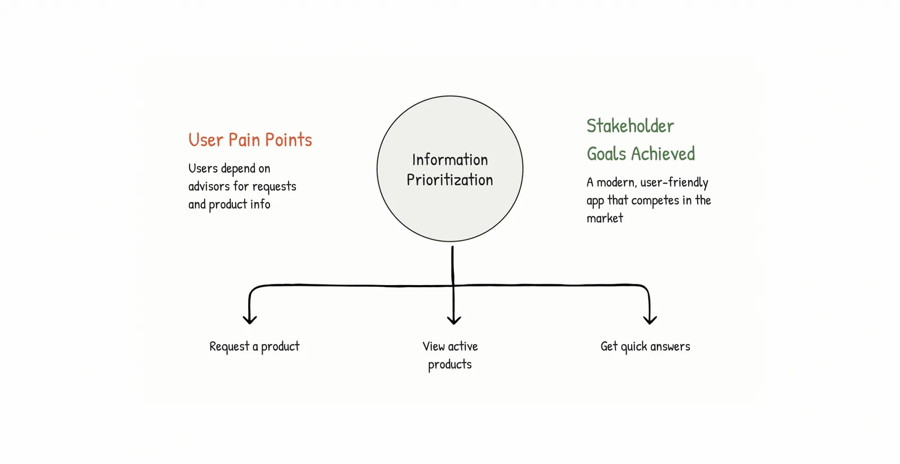

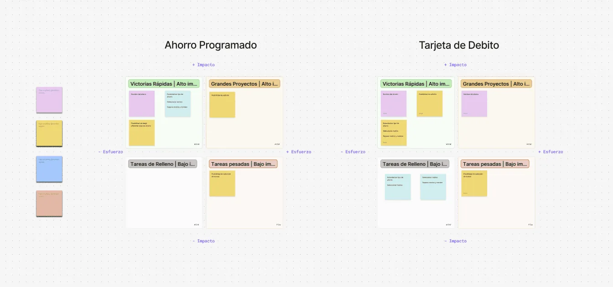
Tres hallazgos marcaron el rumbo
- 01La dependencia del asesor era el cuello de botella detrás de la mayoría de los contactos con soporte
- 02La competencia ya ofrecía en digital lo que Tu Financiera resolvía a mano
- 03Los usuarios no tenían visibilidad de sus propios productos
De “asistido” a autogestión
La estrategia se apoyó en cinco pilares para llevar el producto de “asistido” a “autogestión”.
Registrate sin esperar a un asesor
Rehicimos el onboarding como un flujo de punta a punta con validación automática. Los usuarios se registran solos en lugar de esperar a que un asesor procese sus datos.
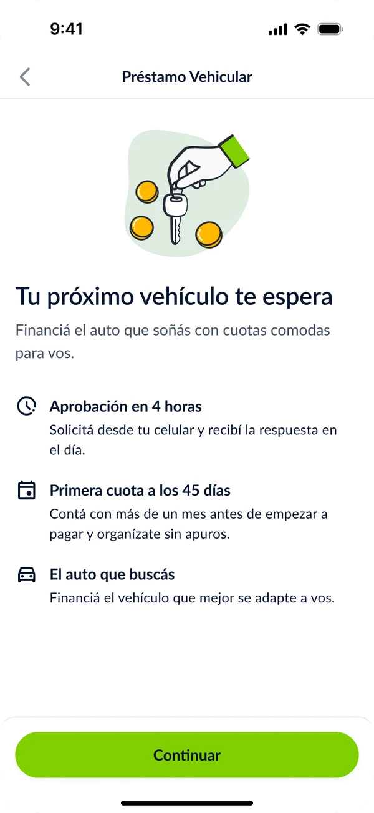
Pedí cualquier producto desde la app
Los usuarios piden productos directamente en la app, sin idas y vueltas por WhatsApp. Fue la transformación central del proyecto y el pedido más fuerte en el feedback de los usuarios.
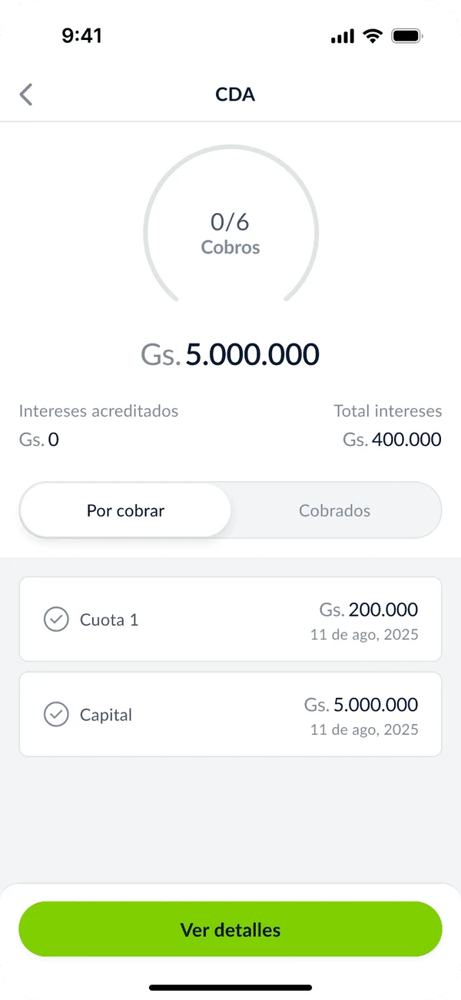
Tus productos y saldos, siempre a la vista
Una pantalla de inicio que muestra los productos activos y los saldos de un vistazo. Antes, los usuarios no tenían visibilidad y contactaban a soporte solo para confirmar un estado.

Una interfaz que genera confianza
Un lenguaje visual moderno, alineado a la marca, que reemplazó una app que se sentía anticuada e insegura.

Una base consistente y escalable
Construí un sistema de diseño desde cero, con color, tipografía y componentes. Dio consistencia a cada flujo y aceleró el trabajo del equipo de diseño.
Las mismas tareas, rediseñadas
La app anterior al lado de lo que salió, en cuatro flujos del día a día.
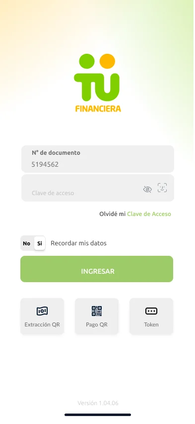
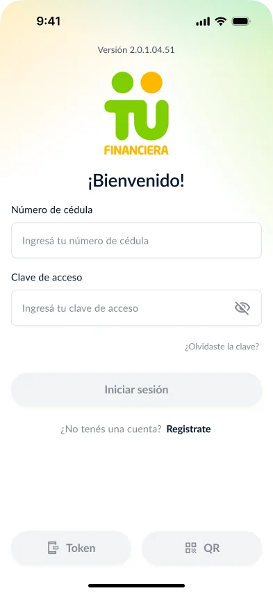
Una entrada más clara
El inicio de sesión anterior le daba a tres botones grises (retiro QR, pago QR y Token) el mismo peso que a ingresar, más un interruptor No/Sí para recordar tus datos. El nuevo tiene una sola acción principal. Token y QR pasaron abajo como opciones secundarias, y los campos dicen exactamente qué escribir.
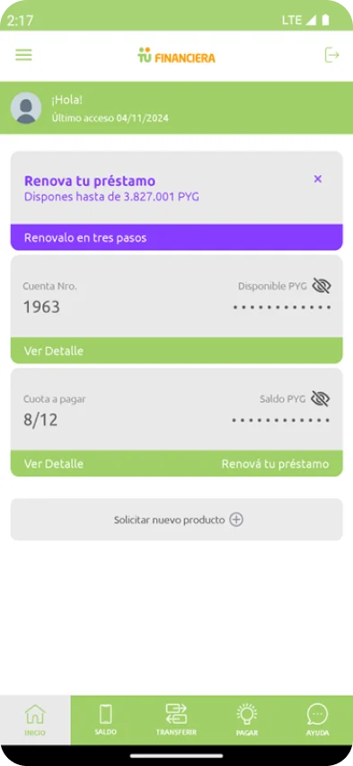
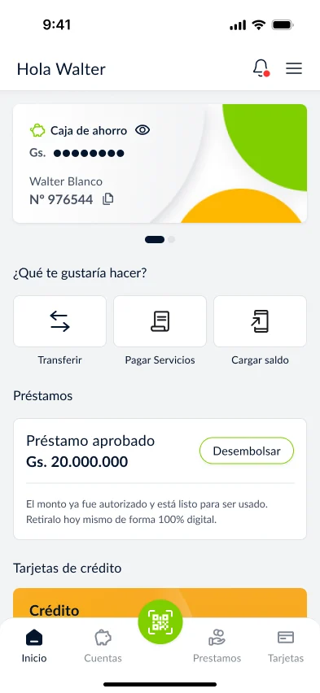
Tu plata primero
Antes, el inicio era una pila de bloques grises, cada uno con un número de cuenta, un saldo oculto y un enlace “Ver detalle”, debajo de un banner promocional. Ahora abre con tu caja de ahorro, tres accesos rápidos (transferir, pagar servicios, cargar saldo) y el estado de tu préstamo, con el siguiente paso a un toque.
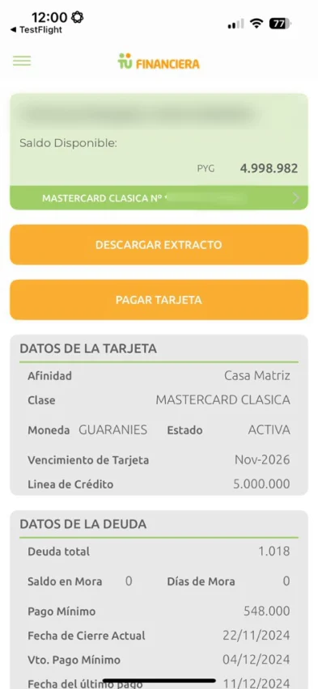
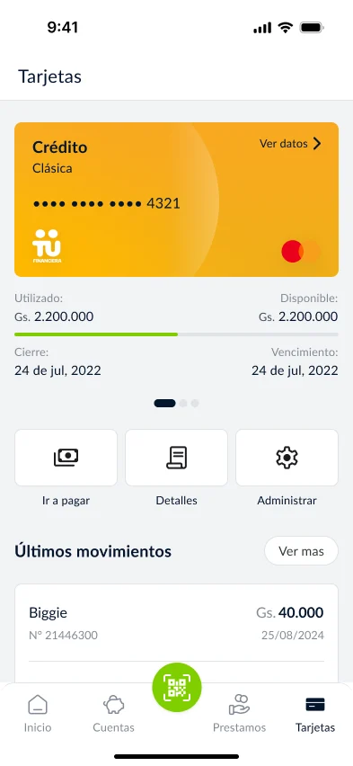
De una planilla a un estado
La pantalla anterior de la tarjeta abría con dos botones naranjas grandes y después dos tablas largas, datos de la tarjeta y datos de la deuda, para leer línea por línea. La nueva muestra la tarjeta, cuánto usaste frente a lo disponible, las fechas de cierre y vencimiento, tres acciones y tus últimas compras.
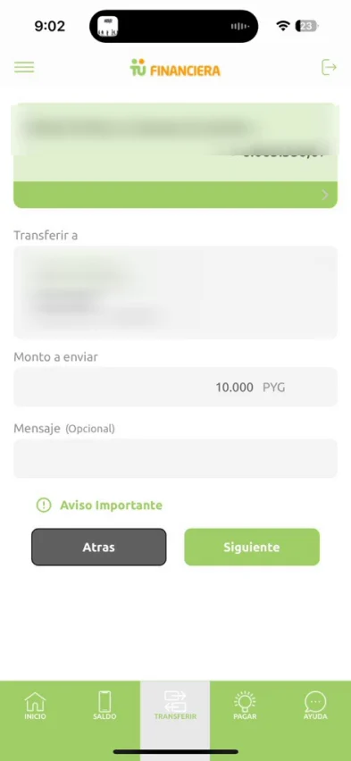
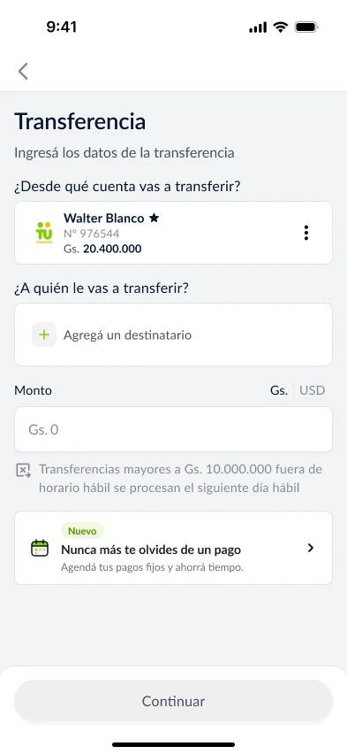
Un formulario largo se volvió pasos claros
La transferencia anterior ponía el destinatario, el monto y el mensaje en una sola pantalla, con botones de Atrás y Siguiente. Ahora elegís la cuenta, seleccionás un contacto guardado o buscás por alias, y un paso nuevo muestra el nombre y la cuenta del destinatario antes de seguir, algo que la app anterior no tenía. Después revisás un resumen y recibís un comprobante que podés compartir.
Visibilidad para todo, o lo que el usuario necesita ahora
Un inicio enfocado en lugar de un catálogo de productos
La tensión Los stakeholders querían todos los productos financieros en la pantalla de inicio. Con una base de clientes formada mayormente por adultos mayores, identifiqué el riesgo de que demasiadas opciones hicieran más difícil navegar la experiencia.
Qué hice Propuse tres accesos rápidos, una invitación principal a un producto y un grupo chico de productos destacados. El resto del catálogo quedó a un toque.
Cómo logré el acuerdo Presenté distintas opciones de layout, usando datos de atención al cliente y principios de UX como la Ley de Hick para explicar por qué demasiadas opciones podían abrumar a los usuarios. Eso ayudó a alinear al equipo alrededor de un inicio más simple.
Resultado El inicio enfocado salió con tres accesos rápidos, una invitación principal a un producto y una selección de productos destacados, en lugar del catálogo completo. Refleja la dirección que defendí en las conversaciones con los stakeholders.
La contrapartida es que no todos los productos tienen lugar en el inicio, pero los principales siguen visibles.
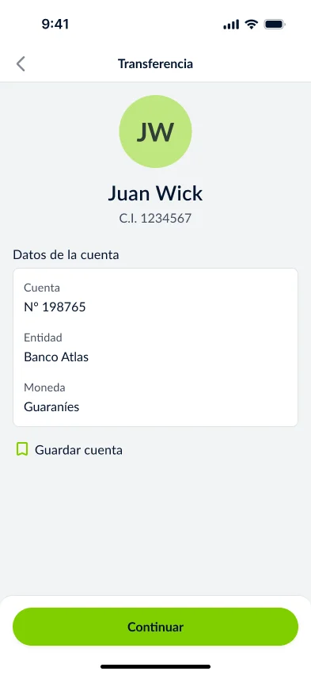
Confirmá a quién le mandás plata
La tensión En la app anterior, el destinatario, el monto y el mensaje estaban en una sola pantalla. Nada te frenaba a revisar quién iba a recibir la plata antes de enviarla.
Qué hice Agregué un paso que muestra las iniciales, el nombre, la cédula, la cuenta, el banco y la moneda del destinatario antes del monto, con la opción de guardar la cuenta para la próxima. Un resumen editable aparece antes de la confirmación final.
La contrapartida es una pantalla más en el flujo. Para una base de clientes formada mayormente por adultos mayores, un momento para revisar el destinatario vale más que una transferencia más rápida.
Después, las primeras entrevistas con clientes
La gerencia tenía dudas sobre entrevistar a clientes, así que empezamos con una sola función, las transferencias programadas.
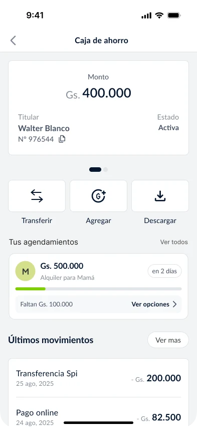
Llevar las transferencias programadas a donde la gente maneja su plata
La señal El 72% de las transferencias programadas nunca se ejecutaba. La gerencia quería que la programación siguiera dentro del flujo de transferencia.
Qué aprendí En entrevistas con 10 clientes y 2 personas del equipo, algunos creían que programar era un paso obligatorio para enviar plata. 9 de 10 querían un lugar visible para sus programaciones, y a los 10 lo que más les importaba era el monto.
Qué hice Llevé las programaciones a la caja de ahorro, bajo “Tus agendamientos,” con el monto adelante, una cuenta regresiva para cada débito y cuánto falta todavía para cubrirlo.
Qué cambió para el equipo Ver cómo los hallazgos se convertían en decisiones de diseño convenció a la gerencia, que apoyó entrevistas para otros productos.
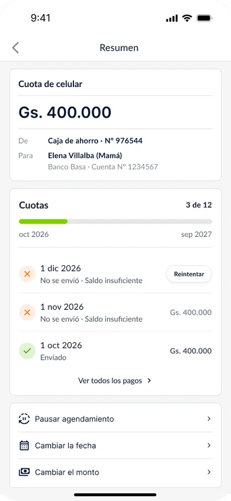
Un pago fallido no debería cancelar toda la programación
La señal Cuando fallaba un pago programado, la programación se cancelaba automáticamente. El 71% de los fallos se debía a saldo insuficiente, muchas veces un problema temporal.
Qué hice Dejé de cancelar la programación cuando falla un pago. El mes fallido queda marcado como no enviado, con el motivo y un botón Reintentar, y el resto de la programación sigue. Desde la misma pantalla, también se puede pausar la programación, cambiar la fecha o cambiar el monto.
La contrapartida es que la pantalla de la programación tiene más información y opciones, pero es el cliente quien decide qué pasa después de un pago fallido, en lugar de que lo decida el sistema.
La autogestión empieza detrás de la pantalla
Alinear al negocio fue lo más difícil. Automatizar el onboarding y la solicitud de productos cambió tareas que operaciones siempre había hecho a mano. Alinear al negocio y a operaciones llevó más trabajo que la interfaz en sí.
El lanzamiento es donde empieza la escucha. Seguimos escuchando después del lanzamiento, y la demanda de autogestión resultó más profunda de lo que el rediseño había previsto. Eso marcó la próxima etapa del producto.
La investigación gana confianza de a pasos. Las prioridades del rediseño salieron de los datos de atención al cliente, que mostraban dónde fallaban las cosas pero no por qué. La gerencia tenía dudas sobre entrevistar a clientes, así que empezamos con una sola función, las transferencias programadas, y esas entrevistas cambiaron el diseño. La próxima vez combinaría los datos con entrevistas desde el principio.
El próximo paso es conectar cada cambio de diseño con sus propias métricas, como el éxito de las tareas en el inicio, la tasa de ejecución de las transferencias programadas y qué tan seguido los clientes se recuperan de un pago fallido en lugar de cancelar. El modo oscuro para el sistema de diseño también está en el roadmap.
Los 14 flujos solo funcionaron en un equipo de tres porque compartían un sistema de tokens, estilos y 216 componentes, creado desde cero durante el rediseño.
Ver el caso de estudio del Design System →


Construyamos algo que valga la pena lanzar
Briefs, colaboraciones o una consulta rápida. Leo todo y suelo responder en un par de días hábiles.